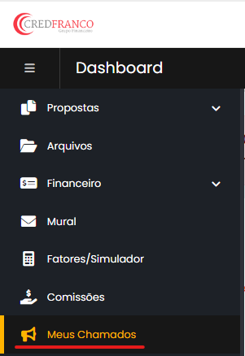
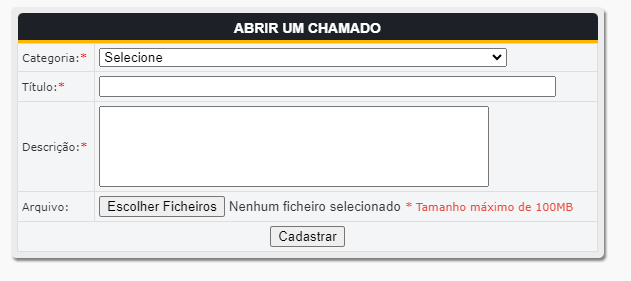

PASSO A PASSO PARA CRIAÇÃO DE USUÁRIO MASTER
Passo 1: Acesse o site do WebCred pelo link: https://gestao.credfranco.com.br/corretores/menu_corretor.php ou clicando aqui (Use o usuário normal, não utilize o usuário sub).
Passo 2: Acesse no menu lateral a opção MEUS CHAMADOS.
Passo 3: Clique em ABRIR CHAMADO

Passo 4: Após selecionar a categoria CRIAÇÃO seguido do banco desejado, preencha os dados solicitados e anexe os documentos que forem necessários.
Após realizar o cadastro acompanhe o chamado constantemente e resolva pêndencias caso seja necessário.